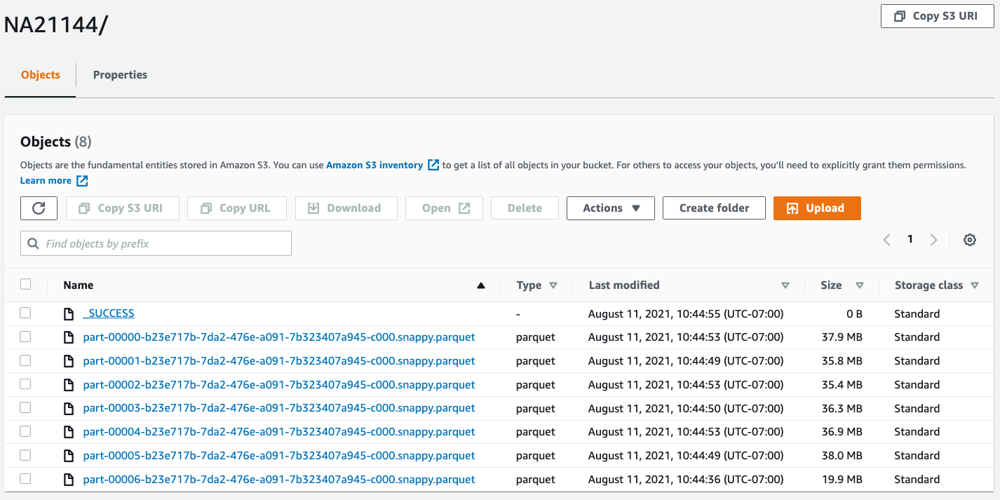

Let’s check if the VCF files have been transformed. You can examine the S3 output location if parquet files are generated:

The data is ready to be queried by Athena. We just need to create table schema for it. You can use Glue crawler to detect schema for you.
CREATE EXTERNAL TABLE `var_part_by_sample`(
`variant_id` string,
`chrom` string,
`pos` int,
`alleles` array<string>,
`rsid` string,
`qual` double,
`filters` array<string>,
`info.ac` array<int>,
`info.af` array<double>,
`info.an` int,
`info.db` boolean,
`info.dp` int,
`info.end` int,
`info.fs` double,
`info.fractioninformativereads` double,
`info.lod` double,
`info.mq` double,
`info.mqranksum` double,
`info.qd` double,
`info.r2_5p_bias` double,
`info.readposranksum` double,
`info.sor` double,
`ad` array<int>,
`af` array<double>,
`dp` int,
`fir2` array<int>,
`f2r1` array<int>,
`gp` array<double>,
`gq` int,
`gt.alleles` array<int>,
`gt.phased` boolean,
`mb` array<int>,
`pl` array<int>,
`pri` array<double>,
`ps` int,
`sb` array<int>,
`sq` double,
`sample_id` string,
`ref` string,
`alt` string)
PARTITIONED BY (
`partition_0` string)
ROW FORMAT SERDE
'org.apache.hadoop.hive.ql.io.parquet.serde.ParquetHiveSerDe'
STORED AS INPUTFORMAT
'org.apache.hadoop.hive.ql.io.parquet.MapredParquetInputFormat'
OUTPUTFORMAT
'org.apache.hadoop.hive.ql.io.parquet.MapredParquetOutputFormat'
LOCATION
's3://<your_s3_path_here>'
;
-- run this statement in Athena in order to load the partitions to the external table
MSCK Repair Table athena_database_name.var_part_by_sample;
For certain analysis, you may care mostly just variants, not the details of samples. To further optimize query performance for such analysis, we could nested sample data into variants using below query. Note you need to change the s3 bucket to one of your own. This can greatly reduce the record count and speedup analysis. In this data model, the record count is reduced from ~16.9 billion to ~160 million.
create table var_nested
with (
external_location = 's3://<your_s3_path_here>',
format = 'ORC',
partitioned_by = array['chrom'],
bucketed_by = ARRAY['pos'],
bucket_count = 60,
)
as
select variant_id, pos, ref, alt,
array_agg(CAST(ROW(sample_id, "gt.alleles") AS ROW(id VARCHAR, gts ARRAY(INTEGER)))) as samples,
chrom
from var_part_by_sample
group by 1,2,3,4,6;
-- run this statement in Athena in order to load the partitions to the external table
MSCK Repair Table athena_database_name.var_nested;
Replace the value for external location S3 path to a location in your own account.
-- finding all samples that have heterozygous G to T variant on chromosome 1 between two positions 9033567 and 9142000
select DISTINCT(sample.id) from (
select samples from var_nested
where chrom='chr1'
and pos between 9033567 and 9142000
and ref = 'G'
and alt = 'T') as f,
unnest(f.samples) as s(sample)
where array_join(sample.gts, '|') in ('0|1')
order by 1;
The same query on the var_part_by_sample table takes much longer as its flattened and scans much more data.
select distinct(sample_id) from var_part_by_sample
where chrom='chr1'
and pos between 9033567 and 9142000
and ref = 'G'
and alt = 'T'
and array_join("gt.alleles", '|') in ('0|1')
order by 1;